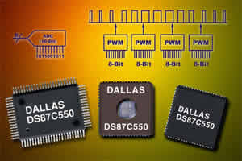
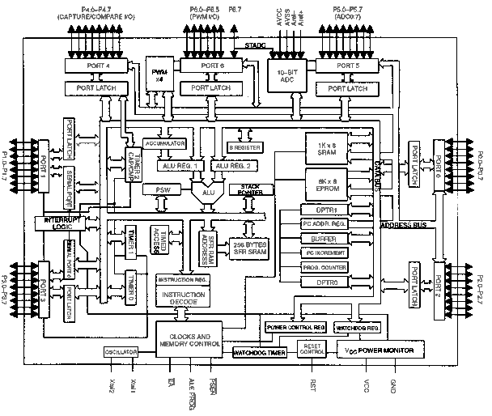

09/02/2002: Nouveaux Microcontrôleurs haute-vitesse DALLAS compatibles 8051


Cette nouvelle série de µC compatibles 8051 sont trois fois plus rapide que leurs grands frères. L'astuce n'est pas nouvelle mais très efficace. Le noyau 8051 redessiné utilise 4 impulsions d'horloge par cycle machine au lieu de 12. Ainsi, un DS80C320 cadencé à 33MHz procure un niveau de performance équivalent à un 8051 standard fonctionnant à 99MHz !
- La série DS80C320
Ce sont des µC 8 bits, qui offrent bien entendu de nombreuses fonctions qui en font de super 80C31/80C32. Parmi leurs caractéristiques, citons :
- Six interruptions externes
- Port série doubles
- Horloge temps-réel et mémoire vive non volatile
- Convertisseur AN 10/12 bits
- Modulateur PWM
- Contrôleur bus CAN
- Coprocesseur mathématique
- Adressage mémoire sur 22 bits (4Mo)
- Interface Clavier
Et tout cela à haute vitesse...
- La série DS80C390
Cette série de µC intègre un double bus CAN 2.0B le plus rapide du monde (selon DALLAS) mais aussi:
- Ports série doubles
- Multiplicateur de fréquence d'horloge (quartz externe plus lent !)
- Fréquence d'horloge max 40MHz
- Détecteur de panne oscillateur (?)
- Interface IrDA
- La série DS87C520/30
Le DS87C520 permet de remettre à niveau un ancien système sur 87C52. Contient une EPROM 16Ko (UV ou UTP) - Le DS83C520 est une version économique à mémoire ROM masquée.
Le DS87C530 offre toutes les fonctions du DS87C520 ainsi qu'une horloge temps-réel avec capacité d'alarme et une mémoire vive statique de 1Ko avec batterie de secours - Idéal donc pour les systèmes d'acquisition de données.
- Fréquence d'horloge max 33MHz
- La série DS87C550
Un diagramme qui parle de lui même:

Soit 8Ko EPROM (UV ou OTP) - 256 octets de RAM + 1Ko de SRAM interne (MOVX) - 3 timers 16 bits - CAN 10 bits -55 lignes de port -Fréquence horloge max 33MHz (équivalent 99MHz sur 8051)- Boîtier PLCC 68 pins ou PQFP 80 pins.
- La série MAX7651/52
MAXIM n'est pas en reste avec ces superbes µC compatibles 8051 haute-vitesse également. Il intègrent:
- 16 Ko de mémoire FLASH (2 banks de 8Ko)
- Un convertisseur 8 canaux A/N 12 bits
- Deux sortie PWM 8bits
- 2 ports série jusqu'à 375 kbps
- 2 entrées externes réservées aux interruptions
Le MAX7651 est la version 5V, le MAX7652 la version 3V (10 µA en veille)
Retrouvez tous ces composants sur http://www.maxim-ic.com